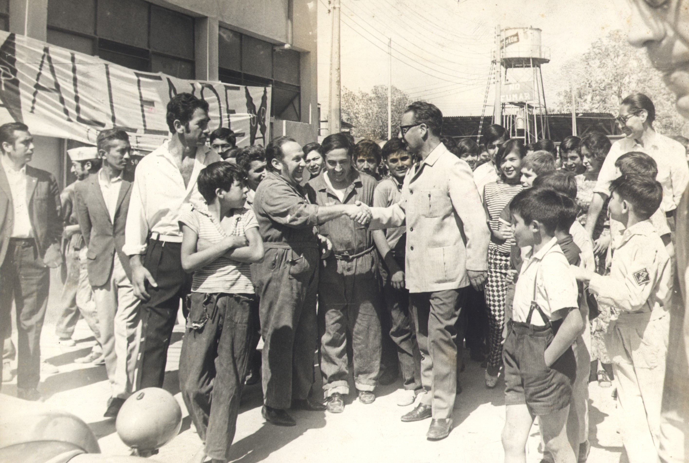
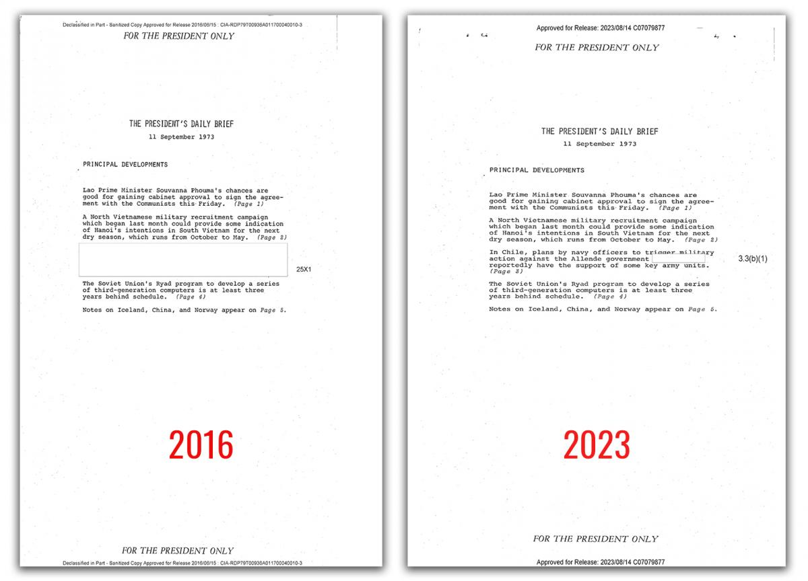
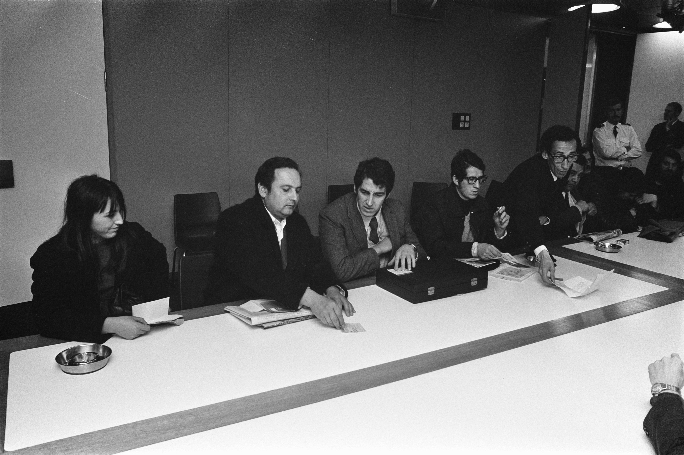

Pada 11 September 1973, jet-jet tempur menukik ke arah Istana La Moneda di Santiago dan menembakkan roketnya. Di dalam istana, Presiden Salvador Allende — seorang Marxis yang naik ke kursi presiden lewat pemilu demokratis — menolak menyerah. Menjelang pukul dua siang, ia tewas di dalam istana yang terbakar. Yang menggantikannya: kediktatoran militer Augusto Pinochet selama 17 tahun. Dan di balik semua itu, ada jejak operasi rahasia Amerika Serikat yang terdokumentasi rapi — dalam arsip yang baru dibuka puluhan tahun kemudian.

1970: Marxis Pertama yang Menang Pemilu
Pada 4 September 1970, Salvador Allende memenangkan pemilihan presiden Chile dengan 36,2–36,3% suara — mengalahkan Jorge Alessandri (±34,9%) dan Radomiro Tomic (27,8%). Tanpa mayoritas mutlak, penentuan diserahkan ke Kongres sesuai konstitusi — dan Kongres mengukuhkannya pada Oktober 1970. Allende mulai menjabat awal November 1970.
Ini peristiwa bersejarah: Marxis pertama di Amerika Latin yang menjadi presiden lewat jalur demokratis — bukan lewat revolusi ala Kuba. Programnya, "Jalan Chile menuju Sosialisme", menjanjikan perubahan lewat kotak suara, bukan senjata. Koalisi Unidad Popular (Sosialis, Komunis, Radikal, dan partai-partai kecil) mendukungnya.
Washington tidak menunggu lama untuk bereaksi. Di Gedung Putih, Presiden Richard Nixon dan penasihat keamanan nasionalnya Henry Kissinger melihat kemenangan Allende sebagai ancaman. Dalam rapat 27 Juni 1970, Kissinger berkata: "I don't see why we need to stand by and watch a country go communist due to the irresponsibility of its people."
Nasionalisasi Tembaga: Pemicunya
Pada 11 Juli 1971, Kongres Chile — dengan suara bulat — mengesahkan nasionalisasi industri tembaga. Perusahaan-perusahaan tambang asing, terutama raksasa Amerika Kennecott dan Anaconda, diambil alih negara. Pemerintah Chile menyatakan keuntungan perusahaan-perusahaan itu selama ini "berlebihan", sehingga tidak ada kompensasi yang dibayar.
Tembaga bukan komoditas biasa bagi Chile — ia adalah urat nadi ekonomi negara itu. Dan bagi Amerika, nasionalisasi ini adalah pengulangan dari mimpi buruk yang sama: dua puluh tahun sebelumnya, Iran menasionalisasi minyaknya — dan berakhir dengan Operasi Ajax 1953.
Satu detail yang terungkap belakangan: raksasa telekomunikasi Amerika ITT (International Telephone & Telegraph) yang beroperasi di Chile bahkan menawarkan US$1 juta kepada CIA untuk menggagalkan Allende — fakta yang terdokumentasi dalam temuan Komite Church Senat AS.
Operasi Rahasia: Track I dan Track II
Pasca-pemilu 1970, CIA menjalankan dua jalur operasi di Chile:
Track I — diketahui Departemen Luar Negeri dan Kedutaan AS: pendanaan propaganda anti-Allende dan dukungan politik untuk lawan-lawannya di Kongres.
Track II — kode sandi: FUBELT. Lahir dari pertemuan pribadi Nixon dan Direktur CIA Richard Helms pada 15 September 1970, dirahasiakan bahkan dari Departemen Luar Negeri dan Pentagon. Perintahnya: mengatur kudeta militer sebelum Allende dikukuhkan Kongres.
Dalam rapat itu, Nixon memerintahkan CIA untuk "make the economy scream" di Chile — membuat ekonomi Chile menjerit — untuk "mencegah Allende berkuasa atau menggulingkannya." Dari dokumen CIA yang dideklasifikasi, Kissinger menetapkan: "it is firm and continuing policy that Allende should be overthrown by a coup" — kebijakan tetap: Allende harus digulingkan lewat kudeta.
Upaya kudeta pertama gagal. Pada 22 Oktober 1970, Jenderal René Schneider — Kepala Staf Angkatan Darat yang konstitusionalis dan menolak kudeta — diculik dan tewas oleh kelompok perwira yang menjalin kontak dengan CIA. Setelah insiden itu, dorongan kudeta menguap untuk sementara; NSDM 93 (November 1970) menggantikan FUBELT. Tetapi Washington tidak berhenti — ia beralih ke strategi jangka panjang: destabilisasi ekonomi.
"Invisible Blockade": Mencekik dari Jarak Jauh
Tahun pertama Allende berjalan baik: upah naik, reforma agraria berjalan. Tetapi dua tahun berikutnya kacau: inflasi melonjak, pangan langka, polarisasi memuncak. Di balik kekacauan itu, ada tangan yang bekerja: Amerika memutus pinjaman dan menekan kredit multilateral untuk Chile — yang oleh Kissinger disebut "invisible blockade", blokade tak kasatmata.
Angka-angka dana rahasia ini terverifikasi dari temuan Church Committee: lebih dari US$13 juta (1963–1974) untuk operasi rahasia di Chile — sebagian besar untuk melawan Allende. Rinciannya: US$3 juta untuk kampanye Eduardo Frei 1964 (mengalahkan Allende saat itu), US$7 juta untuk kelompok oposisi pasca-pemilu 1970, dan sekitar US$8 juta (1970–1973) — angka yang diakui sendiri oleh Presiden Gerald Ford. Mogok truk Oktober 1972 yang melumpuhkan distribusi pangan didukung CIA. Bahkan pada 20 Agustus 1973 — tiga minggu sebelum kudeta — Washington menyetujui US$1 juta untuk partai oposisi; dana itu tidak sempat disalurkan sebelum kudeta meletus.
Catatan redaksi: Komite Church menyimpulkan tidak ada hard evidence — bukti kuat — keterlibatan langsung Amerika dalam eksekusi kudeta 1973 itu sendiri. Yang terbukti ekstensif adalah operasi destabilisasi: dana, propaganda, dan tekanan ekonomi. Kami menyajikan nuansa ini apa adanya — tidak mengeksekusi ≠ tidak bertanggung jawab.

11 September 1973: Hari-H
11 September 1973. Tiga angkatan bersenjata Chile melancarkan serangan terkoordinasi terhadap pemerintahan demokratis. Kudeta dipimpin Jenderal Augusto Pinochet.
La Moneda dikepung tank dan pasukan. Allende berkumpul dengan pengawal setianya di dalam istana. Ultimatum disampaikan: menyerah sebelum pukul 11.00, atau istana dibom angkatan udara. Allende menolak.
Sekitar pukul 11.00, lewat sambungan telepon ke Radio Magallanes, Allende menyampaikan pidato radio terakhirnya: "I will not resign... With my life I will pay for defending the principles dear to our nation... much sooner than later, the great avenues will open through which will pass free men in order to construct a better society."
Menjelang tengah hari, dua jet tempur Hawker Hunter menukik ke La Moneda dan menembakkan roket — 6 gelombang serangan dalam 20 menit. Istana terbakar; Allende selamat di salah satu sayap gedung. Sekitar pukul 14.00, ia tewas di dalam istana.
Ia bunuh diri — kesimpulan yang diterima umum, dan dipastikan oleh ekshumasi dan otopsi forensik 2011 (tim Chile plus ahli internasional, kesimpulannya bulat). Senjatanya: AK-47 pemberian Fidel Castro, disetel otomatis, dipegang di antara kaki di bawah dagu. Ahli forensik Spanyol Francisco Etxeberria: "We have absolutely no doubt."
Dan satu fakta yang membuat bulu kuduk berdiri: CIA sudah tahu sebelumnya. Kabel Kepala Stasiun CIA Santiago, Jack Devine, berbunyi: "A coup attempt will be initiated on 11 September" — informasi yang diteruskan ke Nixon pada 10 September 1973, sehari sebelum kudeta. Kabel ini baru dideklasifikasi pada 1999, dalam proyek deklasifikasi ±23.000 dokumen era Presiden Clinton.
Harganya: 17 Tahun Kediktatoran
Kudeta itu mengakhiri demokrasi Chile dan membuka kediktatoran militer 1973–1990 — 17 tahun. Pinochet resmi dinyatakan presiden pada akhir 1974. Junta membekukan seluruh aktivitas politik dan menindas gerakan kiri.
Korban manusiawinya mengerikan. Laporan Rettig (Komisi Kebenaran dan Rekonsiliasi, Februari 1991) mencatat 2.279 korban pelanggaran HAM. Pendataan resmi 2011 menaikkan angka itu: 3.095 tewas atau hilang, plus 36.948 penyintas penyiksaan dan penahanan politik. Kekerasan terburuk terjadi dalam tiga bulan pertama pasca-kudeta.
Stadion Nasional (Estadio Nacional) dijadikan kamp penahanan massal — 5.000 hingga 7.000 tahanan politik pada September 1973. Caravan of Death (Oktober 1973): regu militer keliling mengeksekusi tahanan — sedikitnya 70 orang tewas. Di antara korban: penyanyi Víctor Jara dan warga Amerika Charles Horman.
Dan Washington? Ia merangkul junta. Pinjaman puluhan juta dolar mengalir ke rezim Pinochet. Dalam pertemuan di Santiago, Juni 1976 — menurut transkrip memorandum yang dideklasifikasi — Kissinger berkata kepada Pinochet: "You did a great service to the West in overthrowing Allende."

Dua puluh delapan tahun sebelum menara kembar runtuh, demokrasi sebuah negara runtuh duluan — dengan bantuan asing yang terdokumentasi.
Pengakuan yang Datang Bertahap
Berbeda dengan Ajax yang pengakuannya menunggu 60 tahun, jejak Chile terbuka lebih cepat — meski bertahap. Church Committee (1975): Senat AS menyelidiki operasi rahasia 1963–1973 dan mendokumentasikan dana serta operasi anti-Allende. 11 September 1998: National Security Archive merilis dokumen FUBELT. 1999: proyek deklasifikasi era Clinton membuka ±23.000 dokumen. Dan pada Agustus 2023 — 50 tahun pasca-kudeta, atas permintaan pemerintah Chile — CIA akhirnya merilis President's Daily Brief tanggal 8 dan 11 September 1973.
Analisis: Dibaca Pakai Lensa Ketahanan Nasional
1. Nasionalisasi SDA butuh ketahanan ekonomi, bukan cuma keberanian politik. Tembaga adalah urat nadi Chile — dan Amerika mencekiknya lewat "invisible blockade" kredit dan perdagangan. Pelajaran untuk hilirisasi Indonesia: kemandirian pembiayaan, pasar, dan teknologi harus dibangun bersamaan dengan nasionalisasi. Kalau tidak, keran ekonomi bisa ditutup dari luar — persis seperti yang dialami Chile.
2. Media yang didanai asing = senjata. CIA mendanai media dan kampanye propaganda masif untuk mendeligitimasi Allende. Relevansi hari ini: transparansi pendanaan media, literasi informasi publik, dan ketahanan ruang digital adalah bagian dari pertahanan negara — bukan urusan "komunikasi" semata.
3. Demokrasi butuh aparat keamanan yang loyal pada konstitusi. Jenderal Schneider — konstitusionalis yang menolak kudeta — dibunuh; penggantinya membuka jalan bagi Pinochet. Ketahanan nasional berarti memastikan aparat keamanan berpihak pada konstitusi, bukan pada patron asing atau faksi politik.
Arsip & Referensi
Angka dan peristiwa di artikel ini diverifikasi silang dari sumber-sumber berikut:
- Church Committee, Senat AS — "Covert Action in Chile 1963–1973" (dana operasi, Track I/II, ITT).
- National Security Archive (GWU) — dokumen FUBELT (rilis 1998), kabel Devine, PDB 11 September 1973 (rilis 2023).
- Wikipedia — "1973 Chilean coup d'état", "Presidency of Salvador Allende", "Project FUBELT", "Rettig Report", "Death of Salvador Allende" (linimasa & angka, diverifikasi silang).
- History.com — "This Day in History: Allende dies in coup" (kronologi 11 September 1973).
- Library of Congress / Brown University — naskah pidato radio terakhir Allende.
- The Guardian / NYT, Juli 2011 — hasil ekshumasi dan otopsi forensik 2011.
- Transkrip memorandum pertemuan Kissinger–Pinochet, Juni 1976 (National Security Archive).
- Catatan sidang Kongres AS, Vol. 144 — kutipan Nixon ("make the economy scream") & Kissinger.
Kredit foto arsip: Allende & pendukung 1972 — Fundo Correio da Manhã (via Wikimedia Commons), public domain; PDB CIA 1973 — CIA via National Security Archive, public domain; pengungsi Chile di Schiphol 1973 — Anefo / Nationaal Archief Belanda (via Wikimedia Commons), CC0.
Catatan redaksi: Allende menang dengan 36,3% suara (pluralitas, bukan mayoritas) dan dua tahun terakhir pemerintahannya memang kacau secara domestik — faktor internal nyata, bukan semata ulah asing. Church Committee menegaskan tidak ada bukti kuat keterlibatan langsung AS dalam eksekusi kudeta; yang terbukti adalah destabilisasi sistematis. Paralel dengan Operasi Ajax 1953 disajikan sebagai analisis perbandingan — bukan klaim konspirasi.
Suka bedah kayak gini? Versi ringkasnya ada di Instagram & TikTok @jejakkuasa — follow biar nggak ketinggalan sejarah yang jarang diceritain berikutnya.